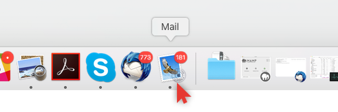
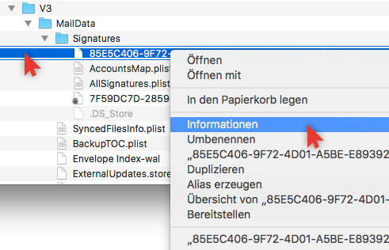

 <p  class="schrift_blau text-bold" translate="YouuseChromeorMozillaFirefox"></p>
  <div class="explain-step-text link text-underline" ng-click="setManual('macmail')" translate="Rightthisway"></div>

 


<p  class="schrift_blau text-bold" translate="STEP1"></p>
 <div class="explain-step-text" translate="Copysnippetontherightside"></div>
 
 
 
  <p  class="schrift_blau text-bold" translate="STEP2"></p>
 <div class="explain-step-text" translate="StarttheprogramMailonyourMac"></div>
 
 
  <div class="explain-step-text" translate="AndyouopentheMailmenuitemsettings"></div>
 
 
 
 <p  class="schrift_blau text-bold" translate="STEP2"></p>
 <div class="explain-step-text" translate="ClicktheEmailinsertthecodesnippet"></div>
 
 
 
 
 <p  class="schrift_blau text-bold" translate="STEP4AINNEWSIGNATURETYING"></p>
 <div class="explain-step-text" translate="Createwithanewsignature"></div>
 
 
 
 
 <p  class="schrift_blau text-bold" translate="STEP4BINEXISTINGSIGNATURETYING"></p>
 <div class="explain-step-text" translate="embedthecodesnippetcandetectmodifiedfile"></div>
 
 
 
 <p  class="schrift_blau text-bold" translate="STEP5"></p>
 <div class="explain-step-text" translate="StarttheprogramFinderonyourMac"></div>
 
 
 
 <div class="explain-step-text" translate="AndopenonGotoMyfolder"></div>
 
 
 
 <p  class="schrift_blau text-bold" translate="STEP6"></p>
 <div class="explain-step-text"><p translate="folderLibraryMailV2Maildatasignatures"></p>
     <p><strong class="schrift_rot" translate="Note"></strong>   <p>
<normal translate="LibraryfollowingLibraryMailV2Maildata"></normal></div>
 
 
 <div class="explain-step-text" translate="NowopenthefileonthefileOpenwithDifferentprogram"></div>
 
 
 
 <div class="explain-step-text" translate="AndelecttheprogramTextEditandOpen"></div>
 
 
 
 
 <p  class="schrift_blau text-bold" translate="STEP7"></p>
 <div class="explain-step-text" translate="Nowparagraphspacingtextdocument"></div>
 
 
 <div class="explain-step-text" translate="AndsavethefileFileBackup"></div>
 
 
 
 
 <p  class="schrift_blau text-bold" translate="STEP8"></p>
 <div class="explain-step-text" translate="NowselectandyouopenbyrightclickingtheInformation"></div>
 
 
 <div class="explain-step-text" translate="Nowoffsetthissettingbeforereset"></div>
 
 
 
 
 <p  class="schrift_blau text-bold" translate="STEP9"></p>
 <div class="explain-step-text" translate="yourmailsselecttheappropriatesignature"></div>
 
 

